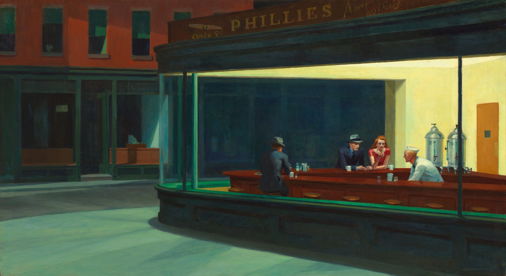
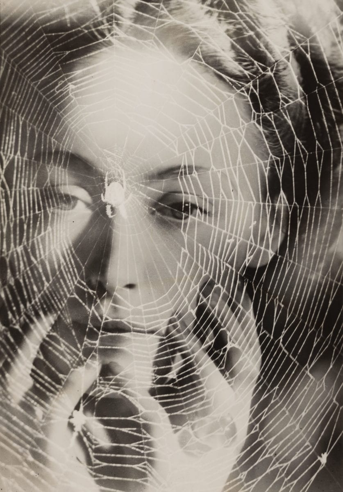
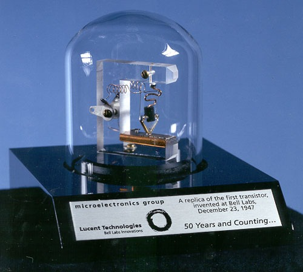
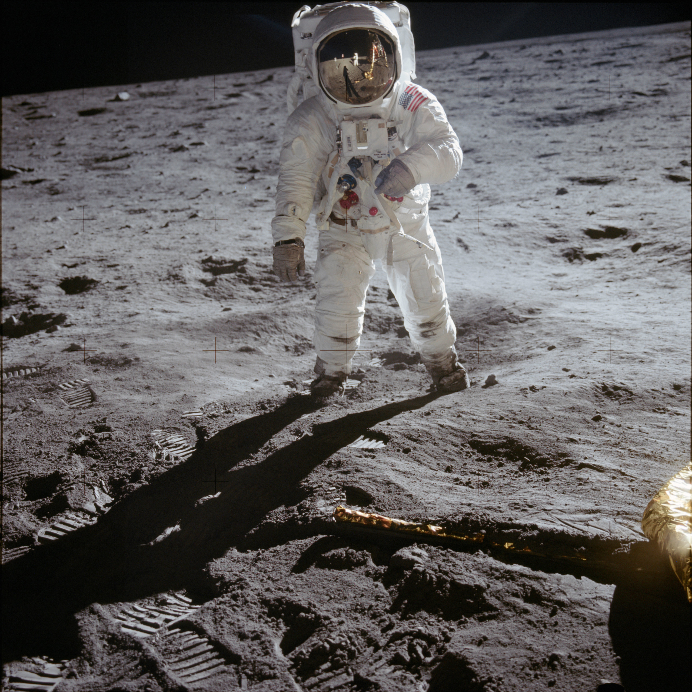
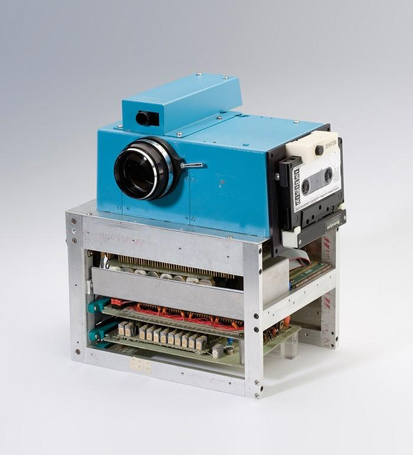
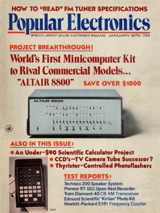
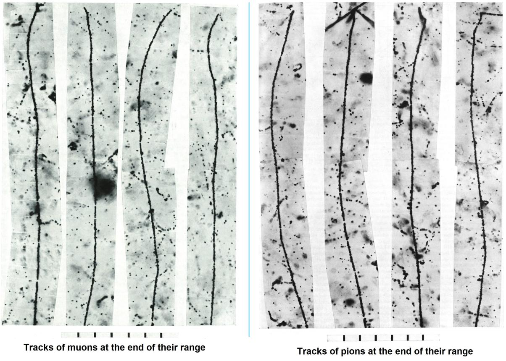

Compreender a História e o funcionamento do mundo em que vivemos para, daí, entendermos o papel das ciências, e mesmo da nossa função dentro dele, requer um olhar atento às estruturas que sustentam esse organismo vivo que é a sociedade humana.
Como vimos na primeira parte deste artigo1, ao final do século XIX surge um novo tipo de poder cuja força se sustentava na produção industrial, na produção e distribuição de energia e na comunicação. E, de certo modo, como veremos, essa nova estrutura determinou os rumos das ciências e, consequentemente, de toda a sociedade no século seguinte. Apesar da configuração social de hoje, aparentemente, ser muito distinta daquela de mais de 100 anos atrás, ainda continuamos a discutir sobre industrialização, reindustrialização e desindustrialização, para falarmos sobre a produção de riquezas; o controle das fontes de energia, e também de outros recursos naturais, ainda continuam causando guerras; e a comunicação tornou-se global.
O século XX testemunhou a maturidade de muitas ideias nascidas no século XIX, ideias que hoje, no século XXI, vemos se metamorfosear em frente aos nossos olhos. A produção de imagens por aparelhos foi uma dessas invenções. Da unicidade dos daguerreótipos à imaterialidade das imagens digitais e às imagens criadas pelos algoritmos que controlam os supercomputadores chamados de inteligências artificiais, 200 anos se passaram. O que a fotografia significa hoje?
A história do século XX passa pela construção de uma nova arquitetura social onde ciência e imagem significam poder. No século XXI, vemos essa arquitetura em pleno funcionamento.
Mas, a rapidez em que toda essa transformação aconteceu tem consequências. E, no meio de tantas mudanças, continuamos devidamente distraídos.
Nesta segunda parte do texto, vamos acompanhar os principais acontecimentos históricos do século XX, tentando reconstruir o caminho percorrido pelas ciências até chegarmos à terceira década do século XXI.
Os cinquenta primeiros anos do século XX podem ser descritos como tempos de convulsão: guerras mundiais, revoluções, colapso e ascensão de impérios, crises econômicas, crises das certezas.
As duas grandes guerras mundiais, a primeira iniciada em 1914, que durou 4 anos, e a segunda que ocorreu de 1939 a 1945, foram momentos de crise na organização e distribuição do poder em todo o globo. Iniciado sobre o domínio dos impérios coloniais europeus, estabelecidos nos séculos anteriores, o século XX encerra a sua primeira metade drasticamente diferente, o mundo passa a ser bipolar e pós-colonial [28,24,25].
De fato, nos anos da primeira década do século XX, os impérios industriais à época controlavam grande parte do planeta. Reino Unido, França, Bélgica, Império Alemão, Rússia Imperial, Império Austro-Húngaro, Império Otomano, Japão, em rápida ascensão, e Estados Unidos, tinham controle de extensas áreas da África e da Ásia, incluindo partes do Oriente Médio.
Na América Latina, o Brasil, que havia deixado de ser colônia em 1822 e se tornado República em 1889, fazia parte do sistema imperial econômico. A Inglaterra controlava o comércio marítimo mundial, incluindo o “livre comércio” no Atlântico, e tinha forte presença no sistema bancário e na infraestrutura do país, principalmente na construção de ferrovias no território brasileiro. Os Estados Unidos, com a Doutrina Monroe (1823), inicialmente com objetivo defensivo de “anti-colonialismo europeu nas Américas” passa, posteriormente, a defender a “predominância norte americana no hemisfério”; e a França, com a corrente filosófica Positivismo, de onde se origina a expressão Ordem e Progresso da nossa bandeira nacional, influenciavam a política e a cultura. Empresas alemãs, como a Bayer e a Siemens, se estabelecem no Brasil em 1896 e 1905, respectivamente, liderando setores industriais que surgiam no país.
Já em outros países da região as forças imperialistas se manifestaram militarmente: entre 1890 e 1910, Cuba, Porto Rico, Panamá, Colômbia, Nicarágua, República Dominicana, Haiti e México estiveram envolvidos em conflitos militares com Estados Unidos ou França.
Na primeira grande guerra, esses impérios competiam entre si por colônias, e seus recursos, influência, mercado, prestígio.
Ao final da primeira guerra, em 1918, as potências europeias estavam enfraquecidas economicamente. Colapsaram os impérios Austro-Húngaro, Otomano, Alemão e o império Russo Czarista, após a revolução Bolchevique, que levou o partido comunista ao poder. Em 1912, com a queda da dinastia Qing, encerra-se mais de 2.000 anos de história do império Chinês. Os Estados Unidos surge como o principal credor global e, com sua estrutura industrial intacta, se consolida como líder na produção industrial mundial. E também o Japão amplia a sua influência na Ásia. Após a primeira guerra Sino-Japonesa (1894-1895), da guerra Russo-Japonesa (1904-1905) e da primeira guerra mundial, o Japão tinha anexado ao seu território a península coreana, a ilha de Formosa (Taiwan), além de algumas ilhas do Pacífico e concessões territoriais na China, que antes da primeira guerra estavam sob domínio alemão.
No período chamado “entre guerras”, crises econômicas: a grande depressão de 1929 é considerada a pior crise econômica do sistema capitalista; instabilidade política e ressentimentos nascidos nas derrotas da primeira guerra se avolumaram, culminando na segunda guerra mundial.
A Alemanha almejava tornar-se um império continental europeu, baseado, principalmente, em auto suficiência de recursos naturais, e para isso precisava conquistar o leste europeu e partes da Rússia, tornando-as colônias alemãs; e também um império etnicamente puro e superior, o que justificava o genocídio de judeus, ciganos, pessoas com limitações físicas e mentais, homossexuais e do povo eslavo.
O Japão também almejava autosuficiência econômica, leia-se: acesso a petróleo, ferro, borracha, carvão natural; e ser potência global. Para isso, o plano era dominar a China, Coréia, Sudeste Asiático e ilhas do Pacífico, estabelecendo a “Grande Ásia Oriental”.
A Itália fascista sonhava com o tempo do Império Romano e a influência sobre o Mediterrâneo. Participou das invasões da Albânia (1939) e da Grécia (1940).
Estimativas afirmam que o total de mortos em consequência da segunda guerra, incluindo fome e doenças, além dos conflitos armados, chega a mais de 50 milhões. O holocausto judeu vitimou 6 milhões de pessoas. A Polônia perdeu quase 20% da sua população, quando 1,8 milhões de civis não-judeus foram mortos. A Rússia, entre militares e civis, sofreu a perda de mais de 20 milhões de vidas. No total, estima-se que mais de 20 milhões de pessoas morreram durante as ocupações japonesas. Na China, no episódio conhecido como Massacre de Nanquim, durante 40 dias, de dezembro de 1937 a janeiro de 1938, foram mortas entre 200.000 e 300.000 pessoas.
As perdas humanas na Alemanha, na Itália e no Japão chegaram a 12,5 milhões de pessoas, incluindo as mais de 200.000 mortes decorrentes das bombas nucleares lançadas, em agosto de 1945, sobre as cidades japonesas de Hiroshima e Nagasaki.
As mortes foram em escala industrial.
Como uma resposta às atrocidades ocorridas, em 1948, foi adotada a Declaração Universal dos Direitos Humanos, pela ONU - Organização das Nações Unidas, órgão criado após a segunda grande guerra, estabelecendo direitos e liberdades fundamentais aplicáveis a todos os seres humanos sendo, desde então, a base jurídica, política e ética do sistema internacional dos direitos humanos.
As duas grandes guerras foram os primeiros momentos da história quando a indústria teve papel decisivo no resultado do conflito.
A guerra foi mecanizada. Muitos armamentos foram desenvolvidos nessa época: metralhadoras, tanques, aviões, gases tóxicos, submarinos, porta-aviões, foguetes, mísseis, radares, bombas atômicas. Com a invenção da bomba atômica, a espécie humana era, pela primeira vez, capaz, tecnicamente, de uma autodestruição.
A produção industrial usava o modelo criado por Henry Ford (EUA, 1863 - 1947), que foi engenheiro na Edison Illuminating Company e posteriormente fundou a Ford Motor Company em 1903, em Michigan - EUA. Com o lançamento do automóvel Ford Model T, em 1908, Ford revolucionou a indústria automobilística.
A logística para a distribuição das armas, de alimentos, combustíveis e pessoas durante os conflitos usavam, fundamentalmente, os transportes férreos e marítimos. O petróleo torna-se estratégico. E, sem uma comunicação eficiente, todo o sistema tornava-se fraco. O rádio, o telégrafo, usando códigos criptografados, eram usados para coordenar as ações. A logística passou a ser símbolo de modernidade.
Toda essa estrutura se refletia na vida da sociedade civil. Com a ampliação e os novos desenvolvimentos dos sistemas elétricos, de transporte, de telecomunicações, que se tornaram cada vez mais complexos, o cotidiano passou a ser mecanizado.
Nos grandes centros urbanos, o trabalho, o consumo, a organização das cidades, o ritmo da vida, a sociedade inteira passou a ser moldada pelo modelo de linha de produção industrial.
Rádio, cinema e a imprensa também passaram a funcionar como indústrias. Durante as guerras passaram a ser usados para mobilizar as populações e disseminar ideias políticas.
O fenômeno denominado Indústria Cultural pelos filósofos e sociólogos da Escola de Frankfurt, movimento originado no Instituto de Pesquisa Social da Universidade de Frankfurt, Alemanha, na década de 1920, refere-se à percepção de que a cultura também podia gerar lucro. Na chamada Cultura de Massas, os meios de comunicação vendem informação e entretenimento como mercadorias [35].
O indivíduo que vive na sociedade moderna industrial percebe o espaço, o tempo e a própria identidade de maneira diferente.

As pinturas do artista americano Edward Hopper (1882) traduzem a sensação de isolamento e silêncio, paradoxalmente, em meio à multidão e ao ritmo acelerado que caracterizavam os ambientes urbanos na época.
O movimento surrealista, iniciado em Paris, na década de 1920, tinha como objetivo, segundo André Breton, escritor francês líder do movimento e autor do Manifesto Surrealista: “Resolver as condições anteriormente contraditórias do sonho e da realidade em uma realidade absoluta, uma super-realidade, uma surrealidade.” [20].
Os artistas envolvidos no movimento eram influenciados pelas teorias psicanalistas desenvolvidas por Sigmund Freud (Áustria, 1856) e usavam o inconsciente como uma ferramenta na criação artística. Os surrealistas pretendiam resgatar a criatividade que, segundo eles, estava sendo sufocada pelo racionalismo, pelo domínio da lógica e da razão. Como a violência das guerras havia criado uma espécie de desilusão sobre os avanços técnicos/tecnológicos conseguidos com base nos conhecimentos científicos atingidos nas décadas anteriores, a proposta dos artistas era que, na arte surrealista, o abstrato, o acaso, o irreal, o humor, os sonhos se combinassem livremente. A ideia de “vida utilitária”, que dominava a sociedade industrial, deveria ser tensionada.
A fotografia surrealista foi uma experiência artística que transgrediu a noção de imagem fotográfica como “espelho do real” e fez da fotografia uma construção da mente, consciente e inconsciente, com profunda carga simbólica. Para construir essas imagens, os próprios recursos técnicos da fotografia eram usados como ferramentas para a criação de outras realidades.

Solarização, rayografia, invenções do artista visual Man Ray (EUA, 1890), dupla exposição, fotomontagem, enquadramentos incomuns, borrões, sombras, espelhos, distorções, desfoques, manipulações químicas eram algumas das técnicas utilizadas pelos artistas para sugerir instabilidade, irracionalidade, sensações de memória ou sonho, causando estranhamento, ambiguidade, sugerindo uma ruptura com a percepção racional.
Os artistas surrealistas queriam revelar o lado oculto da vida moderna: alienação, ansiedade e a sensação de perda da identidade.
Na primeira metade do século XX, aspectos técnicos relacionados à captação de imagens pelas lentes das máquinas fotográficas tinham atingido importantes evoluções.
A empresa Kodak lançou, em 1925, o filme no formato 35mm que tornou-se o formato mais usado, desde então, tanto para fotografia quanto para cinema. Em 1927, a empresa alemã Leica, lança a primeira câmera, já utilizando os filmes de 35mm, verdadeiramente portátil, possibilitando a ampliação dos temas e ambientes a serem fotografados; as ruas dos centros urbanos e a guerra são dois exemplos de assuntos que passam a ser registrados pelas lentes das máquinas fotográficas.
Nesse período, o sistema óptico da máquina também alcançou níveis de excelência. Pesquisas realizadas pela empresa alemã Zeiss, fundada em 1846, transformaram a fotografia em ciência aplicada, desenvolvendo teorias sobre distância focal e abertura do obturador que permitiam a produção de lentes luminosas e precisas. A engenharia óptica desenvolvida também seria usada na indústria da guerra e na produção de microscópios e telescópios. O modelo Kise Exakta, lançada pela empresa alemã Ihagee, em 1936, foi a primeira máquina fotográfica, usando filme 35mm, produzida em escala industrial com o sistema SLR (Single Lens Reflex), permitindo que, através da máquina, o fotógrafo visualizasse, com precisão, a imagem que estava sendo captada.
A tecnologia para a transmissão de imagens fotográficas através dos cabos telegráficos, e depois cabos telefônicos, utilizando o efeito fotovoltaico, foi desenvolvida ainda nas primeiras décadas do século XX. Em 1906, Arthur Korn, matemático, físico e inventor alemão, criou o primeiro aparelho de varredura fotoelétrica [30]. Em 1910, o sistema era utilizado para a transmissão de imagens entre Berlim, Paris e Londres.
O sistema de Korn, chamado de telefotografia, se baseia na propriedade da substância selênio ser fotocondutora, ou seja, a resistência da substância muda quando ele é iluminado: mais luz, menor resistência elétrica, mais corrente circula; menos luz, maior resistência, pouca corrente elétrica circula. A transformação da imagem em eletricidade ocorria expondo o negativo da imagem a ser transmitida, em um rolo de vidro que era iluminado. Após a luz atravessar o negativo, era refletida sobre uma placa revestida de selênio, ligada a fios condutores. A corrente elétrica gerada pela mudança de resistência do selênio variava junto com a intensidade da luz filtrada pelo negativo da imagem e era transmitida pelos fios a uma estação receptora. O aparelho receptor realizava a operação inversa: eletricidade - luz - imagem.
Em 1922, usando sistemas mais complexos, foi transmitida a primeira imagem fotográfica entre Europa e EUA. A célula de selênio foi um precursor dos sensores das câmaras digitais.
Foi ainda na primeira metade do século XX que surgiram as primeiras tentativas de entender as questões filosóficas decorrentes da produção e da transmissão de imagens através de máquinas. No ensaio “Pequena História da Fotografia” (1931) [6], o filósofo alemão Walter Benjamin (1892) mistura filosofia com história da técnica fotográfica, história da arte, estética e política. Ele apresenta a ideia de que a fotografia, com sua característica de reprodutibilidade, sua capacidade de congelar o instante, ampliar detalhes, registrar movimentos, preservar rostos e gestos, transforma profundamente a arte. Mais do que isso, Benjamin defende que a invenção da técnica fotográfica modifica nossa maneira de olhar, nossa percepção de tempo, a memória, a nossa relação com a realidade. A fotografia revela, ao olho humano comum, aspectos ocultos da realidade, um mundo invisível ao olhar, um mundo chamado por ele de inconsciente óptico, em paralelo ao inconsciente psíquico definido por Freud.
Também pertencente à Escola de Frankfurt e fortemente influenciado, além de Freud, pelas ideias de Georg W. F. Hegel (Alemanha, 1770), Karl Marx (Alemanha, 1818), Friedrich Nietzsche (Alemanha, 1844), Charles Baudelaire (França, 1821), Walter Benjamin, há 100 anos, foi um dos pioneiros na discussão sobre como as tecnologias de produção e reprodução de imagens transformam a própria experiência humana. Seu pensamento foi revolucionário pois questiona como a técnica influencia nossa percepção, como as imagens moldam a memória, como o capitalismo, ao submeter a cultura à industrialização, transformando-a em mercadoria, altera nosso olhar e nosso modo de viver o mundo. Benjamin desapareceu durante uma tentativa de fuga da Europa durante a segunda guerra, quando tinha 48 anos.
O termo Zeitgeist, de origem alemã, pode ser traduzido como “espírito do tempo” e refere-se aos valores, ideias, crenças e modos de vida predominantes em um certo período histórico. Embora não exista pensamento homogêneo em cada época e grupos sociais diferentes vivam experiências distintas, o termo serve para falar de um certo modo de pensar, sentir e perceber o mundo em cada época.
O desenvolvimento das Ciências Humanas na virada do século XIX para o século XX foi uma resposta à tentativa de entender essa nova sociedade moderna: industrial, urbana e de massas. Antropologia, Sociologia, Filosofia. Psicanálise, Linguística, História, Economia, Ciências Políticas; essas ciências surgem ou se institucionalizam nesse período, reformulando seus fundamentos para investigar essa nova realidade. A percepção de que o mundo tradicional estava desaparecendo, o fim da certeza de que a história da humanidade seguia um progresso inevitável, como acreditava o Iluminismo, e a descoberta de que o ser humano não é totalmente consciente e guiado pela razão, leva a um outro modelo intelectual: que a capacidade de compreensão humana depende da cultura, da história, da linguagem, de estruturas inconscientes e da posição e do ponto de vista do observador. Ou seja, o contexto importa decisivamente e o sujeito que observa nunca está totalmente externo ao fenômeno observado.
Relatividade é uma boa palavra para descrever essa nova faceta da investigação científica [31].
As Ciências Exatas, ao longo do século XX, também foram transformadas por essa nova maneira de pensar.
As teorias clássicas de Newton e o eletromagnetismo de Maxwell não tinham respostas para novas perguntas que surgiam. Experimentos envolvendo estrutura atômica, efeito fotovoltaico, velocidade da luz, radiação térmica desafiavam as teorias vigentes.
Se a luz é uma onda eletromagnética, em qual meio ela se propaga?
As descobertas do fenômeno da radioatividade, por H. Becquerel, em 1896, e dos elementos radioativos polônio e rádio, em 1898, por Marie Curie (Polônia, 1867) e Pierre Curie (França, 1859), e a descoberta do elétron, por J.J. Thomson (Inglaterra, 1856), em 1897, mostravam que a estrutura atômica não é indivisível e estável, como se pensava, e a matéria podia se transformar e, de alguma maneira, contém energia.
Em 1900, Max Planck (Alemanha, 1858), tentando explicar teoricamente como objetos aquecidos emitem luz e calor, propôs pela primeira vez, e porque era a única maneira que os resultados encontrados fizessem sentido, que a energia não é contínua, e sim que era emitida em pequenos pacotes [39].
Em 1905, Albert Einstein (Alemanha, 1879) [12] publicou quatro trabalhos que se tornaram decisivos para a pesquisa científica a partir daquele momento. Nos artigos estavam determinados:
fundamentos teóricos que explicam o efeito fotoelétrico e embasaria o conceito da dualidade onda-partícula da luz;
modelo matemático para o movimento Browniano (movimento aleatório de partículas suspensas em um meio, como o pólen, por exemplo);
teoria da relatividade especial: a velocidade da luz é constante e nenhum referencial é privilegiado;
equivalência entre energia E e massa m: \[E = m c^2,\] onde \(c\) é a velocidade da luz.
Em 1915, Einstein publica a Teoria da Relatividade Geral, onde ele descreve a gravidade como uma curvatura do espaço-tempo causada pela massa dos corpos.
Esses trabalhos redefiniram luz, matéria, energia, massa, tempo e espaço.
A luz, agora, além de ser onda, passou também a ser considerada partícula.
A própria noção de partícula se altera.
Na teoria clássica de Newton, partícula é considerada um objeto de tamanho zero, que carrega energia e se localiza em um lugar preciso do espaço e que se movimenta com uma velocidade exata em qualquer momento. A teoria das coordenadas, definidas por Descartes, descreve muito bem esse modelo. Mas, a partir do trabalho de Einstein, partícula significa, dizendo de maneira simplificada, uma quantidade indivisível de energia, com uma certa quantidade de movimento. Esse modelo é chamado partícula quântica.
Nos anos seguintes, nomes como Ernest Rutherford (Nova Zelândia, 1871), Niels Bohr (Dinamarca, 1885), Louis de Broglie (França, 1892), Werner Heisenberg (Alemanha, 1901), Erwin Schrödinger (Áustria, 1887), Max Born (Alemanha, 1882), Paul Dirac (Inglaterra, 1902), desenvolveram um novo modelo para a estrutura atômica: os elétrons se localizam não em uma órbita, com trajetória precisa ao redor do núcleo do átomo, mas sim em uma “nuvem”, que representa uma probabilidade do elétron estar naquela região. Os elétrons também são partículas quânticas.
Segundo o princípio da incerteza de Heisenberg (1927), não é possível conhecer simultaneamente a posição e a quantidade de movimento do elétron, ou das partículas quânticas em geral. O que temos é uma probabilidade, um estado quântico, que é descrito por uma “função onda”, e apresenta várias possibilidades simultaneamente. Ao ser observado, ou seja, ao sistema ser perturbado pela tentativa de medição, a partícula assume um valor específico, o que é conhecido como o “colapso da função onda”. Assim, propriedades físicas deixam de ser absolutas e passam a depender da interação. O observador importa, a interação para a medição importa [22].
Os fundamentos teóricos matemáticos que estruturam esses novos conceitos e resultados foram estabelecidos por John von Neumann (Hungria, 1903), em seu livro “Mathematical Foundations of Quantum Mechanics” (Fundamentos Matemáticos da Mecânica Quântica, 1932) [51], onde ele usa operadores lineares auto adjuntos definidos em um espaço de Hilbert complexo para estabelecer uma das primeiras formulações axiomáticas da área. Von Neumann realizou pesquisa relevante em matemática, física, economia, biologia teórica, química, computação. Em 1926 e 1927, com bolsa da Fundação Rockefeller, trabalhou na Universidade de Gottingen, um dos principais locais de pesquisa na época, sob a supervisão do matemático David Hilbert (Alemanha, 1862) [34].
No século XIX, a pesquisa em matemática também tinha sido confrontada por resultados que abalaram ideias que, na época, eram consideradas apropriadas para descrever a realidade.
Em 1854, Georg Riemann (Alemanha, 1826) apresenta uma conferência em Gottingen, quando ele apresenta uma generalização da própria definição de geometria. Agora, não mais pensada a partir de pontos ou retas no espaço, mas como n-uplas que respeitam certas regras, sendo a principal delas a que envolve o cálculo de distância. Propriedades geométricas são determinadas exatamente pela maneira de calcular distância. Geometria passa a ser uma estrutura matemática. A geometria riemanniana foi uma ferramenta teórica decisiva para a elaboração da teoria da relatividade geral por Einstein.
Em artigos publicados a partir de 1874, Georg Cantor (Alemanha, 1845) criou a teoria dos conjuntos que se tornou fundamental para toda a estrutura da matemática a partir dali. Dos seus resultados surge a definição de vários tipos de infinitos, uns maiores do que outros, o que foi um verdadeiro choque.
David Hilbert, em 1900, no Congresso de Matemáticos em Paris, propôs a solução de 23 problemas com o objetivo de repensar a estrutura formal da matemática, procurando estabelecer axiomas fundamentais que sustentassem logicamente toda a teoria matemática já produzida e também a futura. Em uma espécie de metamatemática, a matemática olharia a própria matemática: teoria matemática sobre teoria matemática [42].
Em 1930, Kurt F. Gödel (Alemanha, 1906), com seu Teorema da Incompletude [19], mostrou que uma axiomatização completa da matemática era impossível, pois “todo sistema formal, consistente, suficientemente poderoso, não pode provar todas as suas verdades usando seus próprios axiomas”. Ou seja, o sistema formal da matemática não consegue alcançar toda a verdade que contém.
No início do século, a matemática, a física, a química e as ciências humanas passaram pelo momento de superar verdades consideradas absolutas até então, mas que não serviam mais a nova realidade que se impunha a partir das novas respostas que surgiam [31].
Seguindo a proposta do método científico feita por Galileu no século XVII, era o momento para novos questionamentos. O próprio Hilbert, em um dos seus problemas, apresenta uma pergunta sobre qual seria o limite da computação mecânica, o que é possível de ser calculado? Esses questionamentos estão próximos dos objetivos da ciência da computação moderna.
Alan Turing (Inglaterra, 1912), considerado o “pai” da computação, para responder à pergunta de Hilbert, criou, em seu artigo "On Computable Numbers, with an Application to the Entscheidungsproblem” (Sobre números contáveis e o problema de decisão) [47], de 1936, a chamada máquina de Turing, um modelo matemático abstrato capaz de, utilizando uma “cabeça” de leitura e escrita, manipular símbolos organizados em espaços individuais, sobre uma fita de comprimento infinito, de acordo com uma tabela de instruções simples. Essa tabela de instruções simples que devem ser realizadas pela máquina para encontrar uma resposta final é o que hoje chamamos de algoritmo. Turing desloca a ideia de que calcular é conseguir um número como resultado final para o processo de obtenção desse resultado, que, segundo ele, é precisamente seguir regras simbólicas. A resposta conseguida por Turing para a pergunta de Hilbert é que existem problemas matematicamente bem definidos que não podem ser calculados através de um algoritmo.
Assim, a lógica e a computação teriam limitações primordiais.
Também a pesquisa de Turing, e do seu orientador de doutorado Alonzo Church (EUA, 1903), estabelece a chamada tese de Church-Turing, na verdade uma hipótese: “tudo que pode ser calculado por uma lista de regras simples, pode ser calculado por uma máquina de Turing”. Essa ideia moldou a natureza da computação como a conhecemos hoje.
Durante a segunda guerra, Turing participou da equipe de cientistas que trabalharam para decifrar o código criptográfico utilizado nas comunicações entre os alemães e seus aliados. A experiência adquirida nesse período influenciou no desenvolvimento das primeiras máquinas de computação eletrônica depois da guerra.
Mesmo todo o reconhecimento recebido pela relevância do seu trabalho científico, e as implicações na vitória dos aliados na guerra, não impediu que Turing fosse condenado por homossexualidade e submetido a um tratamento chamado “castração química”. Turing morreu em 1954, por envenenamento por cianeto.
Outro projeto científico que teve influência decisiva no resultado da segunda guerra foi o projeto Manhattan [26], de onde resultou a construção das primeiras armas nucleares. J. Robert Oppenheimer (EUA, 1904), Enrico Fermi (Itália, 1901), Richard Feynman (EUA, 1918), Niels Bohr, J. von Neumann, entre outros, trabalharam no projeto que se tornou um grande esforço internacional. Muitos dos cientistas participantes nesse, e em outros projetos, eram refugiados europeus e asiáticos estabelecidos nos Estados Unidos, fugindo das guerras. Surge assim, um novo modelo de pesquisa, chamado Big Science, que moldaria a pesquisa científica nas décadas seguintes [16]. Com suporte financeiro estatal foram construídas grandes infraestruturas físicas e institucionais para a realização de pesquisas de longo prazo, em temas que passaram a determinar o poder e o desenvolvimento das nações. O desenvolvimento das ciências passa a ser estratégia de estado.
Ao final da segunda guerra, e da primeira metade do século XX, a ordem no mundo está transformada. As próximas quatro décadas teriam como principais forças de poder duas grandes potências mundiais: Estados Unidos e União Soviética.
Dispositivos construídos para auxiliar na operação de cálculos matemáticos podem ser encontrados desde a antiguidade da história da humanidade.
Milênios separam os quipus, usados pelas antigas civilizações andinas (c. 2.000 a.c.) e os primeiros ábacos, inventados pelos povos sumérios (4.000 a.c.) na antiga Mesopotâmia, atual Iraque, e depois usados e aperfeiçoados pelos chineses, gregos, persas, romanos, japoneses, ao longo de séculos, da máquina considerada o primeiro computador programável, inventado por Charles Babbage (Inglaterra, 1791).
Em 1822, Babbage desenvolveu a máquina de diferença, totalmente mecânica, que usava engrenagens para calcular raízes de polinômios usando o método das diferenças. As ideias de Babbage evoluíram para o projeto de construção de uma máquina autônoma, chamada máquina analítica, que recebia instruções através de cartões perfurados, de modo semelhante às primeiras máquinas de tear automáticas do início da revolução industrial, eliminando a necessidade de ajuste manual da engrenagem para a realização dos cálculos. A matemática e escritora inglesa Ada Lovelace (1815) escreveu o primeiro algoritmo para ser processado por esta máquina. Lovelace é considerada a primeira programadora da história. O projeto para a construção da máquina, financiado pelo governo inglês, foi interrompido pelo seu alto custo.
Em 1931, o engenheiro elétrico e inventor americano Vannevar Bush (1890) desenvolveu o analisador diferencial, computador analógico mecânico que resolvia equações diferenciais através de integração. Bush participou do Projeto Manhattan e, em 1931, foi diretor da Escola de Engenharia do MIT - Massachusetts Institute of Technology, universidade de pesquisa privada, criada em 1861, pelo americano W. Barton Rogers (1804), com a proposta de promover a interação entre pesquisa científica e o desenvolvimento da indústria americana [11].
Um dos alunos de Vannevar no MIT foi Claude Shannon (EUA, 1916). Em sua dissertação de mestrado (1938), intitulada “A Symbolic Analysis of Relay and Switching Circuits” (Uma análise simbólica de circuitos de relés e comutadores) [44], Shannon desenvolve uma teoria matemática para projetar circuitos elétricos.
Relé é, basicamente, um interruptor acionado por uma corrente elétrica.
A ideia de Shannon associa os dois estados do relé: aberto/desligado e fechado/ligado, aos numerais 0 e 1, respectivamente. E observa que a álgebra booleana, teoria matemática criada por George Boole (Inglaterra, 1815), no século anterior, também tratava de dois estados lógicos: 0/falso e 1/verdadeiro. Ou seja, o relé e a álgebra booleana têm a mesma estrutura lógica.
As correspondências propostas por Shannon foram:
| 0 | circuito aberto | |
|---|---|---|
| 1 | circuito fechado | |
| e | ligação em série | |
| ou | ligação em paralelo | |
| não | inversor |
Agora, era possível projetar matematicamente circuitos elétricos, tornando-os mais eficientes e com menos custo. A computação teorizada por Turing passa a ser fisicamente, e eletricamente, possível.
Ainda na segunda guerra, foram construídas máquinas que usavam válvulas termiônicas, com até 2.400 válvulas, com o objetivo de quebrar códigos criptografados e otimizar operações militares. A válvula termiônica, ou tubo de vácuo, foi inventada em 1904, pelo engenheiro elétrico e físico John A. Fleming (Inglaterra, 1849). A função da válvula é também controlar o fluxo de eletricidade e, ao contrário do relé, que possui partes elétricas e mecânicas, o funcionamento das válvulas é totalmente elétrico.
O computador ENIAC - Electronic Numerical Integrator and Computer (1945), construído a partir de um projeto financiado pelo Laboratório de Pesquisas do Exército Americano, era uma máquina de 30 toneladas, com mais de 17 mil válvulas. Foi a primeira máquina programável Turing completa, ou seja, capaz de simular qualquer máquina de Turing, o que significava ter a capacidade de executar algoritmos equivalentes à máquina universal de Turing.
A entrada e a saída de dados da máquina também era feita através de cartões perfurados. Os equipamentos que liam os cartões de entrada e gravavam os cartões de saída eram produzidos pela empresa americana IBM - International Business Machine Corporation, fundada em 1911. Esse tipo de equipamento havia sido usado no censo populacional dos EUA, em 1890, e era um aperfeiçoamento da máquina patenteada, em 1889, por Herman Hollerith (Alemanha/EUA, 1860), um dos fundadores da IBM.
Ao visitar o projeto, John von Neumann propôs uma nova estrutura para a organização do programa do aparelho. Antes, a programação era baseada na posição física dos cabos, interruptores e painéis de controle. No que agora é conhecido como arquitetura de von Neumann, as instruções (algoritmos) e os dados, ficam armazenados internamente na memória da máquina. Na época, a memória do computador ainda era um conceito no início do seu desenvolvimento.
Na segunda geração de computadores, iniciada em 1955, as válvulas que controlavam a corrente elétrica pelo aquecimento de um filamento, processo chamado de emissão termiônica, foram substituídas por transistores. Em 1947, o Bell Laboratories, laboratório de pesquisa da empresa AT&T, do conglomerado iniciado por Graham Bell [18], apresentou esse novo dispositivo que controlava o fluxo da corrente elétrica, como as válvulas, mas funcionavam utilizando as propriedades semicondutoras de materiais; inicialmente os materiais usados foram o silício e o germânio, mas, rapidamente, o silício passou a ser o material predominante.

Em 1956, os pesquisadores americanos do Bell Labs: William Shockley (1910), John Bardeen (1908) e Walter Brattain (1902), receberam o prêmio Nobel de Física pela invenção. Foi o segundo Nobel recebido por pesquisas realizadas no Bell Labs.
A primeira produção industrial do transistor foi feita pela Western Electric, fábrica também participante do conglomerado Bell.
Em 1953, a empresa japonesa Totsuko, atual Sony Corporation, fundada em 1946, pelos japoneses Akio Morita (1921) e Masaru Ibuka (1908), que trabalharam juntos em laboratório de pesquisa no exército imperial japonês, durante a segunda guerra, negociou com a AT&T e o Bell Labs a licença para a produção da peça no Japão. Embora a AT&T fosse uma empresa privada, em contrapartida pelo monopólio das telecomunicações nos Estados Unidos, deveria seguir orientações do governo do país em assuntos de interesse nacional. O Japão, depois da segunda guerra, esteve sob ocupação militar dos EUA até 1952. A Sony foi a primeira empresa a usar o transistor em aparelhos de rádio, televisores e gravadores [37].
No final da década, o primeiro transistor planar foi desenvolvido por Mohamed Atalla (Egito - EUA, 1924) e Daion Kahng (Korea - EUA, 1931), no Bell Labs. O material semicondutor utilizado foi o silício. No mesmo ano, a arquitetura do MOSFET - metal-oxide-semiconductor field-effect transistor, o primeiro transistor planar com a tecnologia MOS que usava um campo elétrico ao invés de corrente elétrica, permitia que seu tamanho físico fosse diminuindo cada vez mais e, consequentemente, o espaço que ocupavam também. Os primeiros circuitos integrados, onde os transistores são montados em uma única peça de silício, foram inventados pelos americanos Jack Kilby (1923), engenheiro elétrico, e Robert Noyce (1927), físico e empresário. Em 2000, os dois dividiram o prêmio Nobel de física, pela participação na invenção dos chips, dando início à história dos microcomputadores.
O primeiro comprador do novo dispositivo foi o exército americano à empresa Texas Instruments, onde Kilby trabalhava. Noyce participou da fundação da empresa Fairchild Semiconductors, em 1957, e da Intel Corporation, em 1968, ambas sediadas na Califórnia. Noyce tinha o apelido de “Mayor of Silicon Valley”. Em 1971, a Intel lança o primeiro microprocessador, em um único chip, com milhares de transistores.
Outras contribuições de Claude Shannon merecem destaque.
Enquanto trabalhava no Bell Labs, em 1948, publicou o artigo “A Mathematical Theory of Communication” (Uma teoria matemática da Comunicação) [45]. Logo no início do texto ele afirma: “Frequentemente as mensagens possuem significado. (...) Esses aspectos semânticos da comunicação são irrelevantes para a engenharia. O aspecto importante é que a mensagem a ser enviada é uma selecionada de um conjunto de possíveis mensagens. O sistema deve ser projetado para operar para toda possível seleção, não apenas para a qual foi selecionada.”
Esse modelo de sistema de comunicação tornou-se o padrão das telecomunicações. Pela primeira vez a palavra bit, dígito binário, era usada para representar a escolha entre duas opções igualmente prováveis. Toda mensagem, independente do significado, pode ser representada por uma sequência de bits. Essa ideia é a base para toda tecnologia digital.
Em 1951, Shannon trabalhando para a CIA - Central Intelligence Agency, realizou pesquisas sobre criptografia. No artigo “Communication Theory of Secrecy System” (Teoria da comunicação do sistema secreto, 1949) [46], ele usa a sua teoria da informação para desenvolver uma análise matemática para definir a segurança de uma chave criptográfica. O AES - Advanced Encryption Standard, padrão de criptografia usado atualmente, considerado o mais seguro, baseia-se na teoria de Shannon.
Entre 1956 e 1978, Shannon foi professor no MIT, onde pesquisou sobre inteligência artificial, sendo um dos organizadores do evento “Dartmouth Summer Research Project on Artificial Intelligence", em 1956, considerado o evento fundador dessa área de pesquisa.
As pesquisas feitas por Claude Shannon desempenharam papel basilar no desenvolvimento das tecnologias que hoje chamamos de mundo digital.
Outra contribuição das pesquisas feitas no Bell Labs foi o desenvolvimento da tecnologia de transmissão de informação via satélite.
Em 1945, o inventor e escritor inglês Arthur C. Clarke (1917) publicou o artigo “Extra-territorial relays - Can rocket stations give worldwide radio coverage?” (Relés extraterritoriais - Estações de foguetes podem fornecer cobertura mundial?), na revista Wireless World, dedicada a assuntos relacionados à comunicação sem fio. No texto, o autor, que possuía formação acadêmica em matemática e física, apresenta a ideia do uso das órbitas estacionárias em torno da Terra, descritas inicialmente por Herman Potocnik, engenheiro e militar austro-húngaro, em 1928, para a construção de um sistema de comunicações de alcance global [54].
Em 1957, foi lançado ao espaço o satélite Sputnik 1, o primeiro satélite artificial, pelo programa espacial da União Soviética. Durante três semanas, até a energia armazenada em uma bateria de prata e zinco terminar, o aparelho emitiu sinais de rádio à Terra. Em janeiro de 1958, o satélite saiu de órbita, caindo na Terra. Os dados obtidos com o monitoramento desses sinais deram origem à pesquisa que resultou no desenvolvimento do GPS - Global Positioning System [43].
O programa espacial soviético atingiu, além do lançamento do Sputnik 1, outros grandes feitos: desenvolveu o primeiro míssil intercontinental; enviou o primeiro animal, a cachorra Laika, e os primeiros humanos, ao espaço: o astronauta russo Yuri Gagarin (1937) em 1961; a primeira mulher astronauta Valentina Tereshkova (URSS, 1937), em 1963. Em 1965, o astronauta Alexei Leonov (1934) foi o primeiro a caminhar no espaço. A primeira estação espacial, em 1971, o primeiro satélite a tocar a lua (1959) e os primeiros satélites a tocar Vênus, em 1970, e Marte, em 1971.
O espaço foi um dos cenários da disputa entre EUA e URSS, no período pós-guerra, conhecido como Guerra Fria [25].
Em 1958, um ano após o lançamento do Sputnik 1, o governo americano cria a NASA - National Aeronautic and Space Administration.
Em 1969, o projeto Apolo, programa da NASA, lança a nave Apollo 11, que levou à lua os primeiros humanos. Neil Armstrong e Buzz Aldrin pousaram na lua em 20 de julho de 1969. Três dias depois, a nave trouxe os astronautas de volta à Terra em segurança.
Imagens fotográficas foram feitas com máquinas da empresa sueca Hasselblad, adaptadas às condições específicas da viagem lunar. São das imagens, fotográficas ou não-fotográficas, mais importantes feitas até hoje.

Estima-se que a transmissão do pouso dos astronautas na lua foi assistida por mais de 600 milhões de espectadores ao redor do globo terrestre e é considerado o primeiro evento verdadeiramente com escala mundial da era da comunicação de massa, sendo também o auge de décadas de pesquisa para a transmissão de imagens em movimento.
Com o invento de Arthur Korn no início do século, sabia-se que era possível transformar imagens em corrente elétrica. Em 1884, um aparelho chamado disco de Nipkow, um disco perfurado em espiral, foi inventado pelo alemão Paul Nipkow (1860). O invento fazia uma varredura da imagem em linhas. A palavra televisão, junção do prefixo grego Tele (\(T\tilde{\eta}\lambda\epsilon\) - à distância) e da palavra latina visio (visão), foi usada pela primeira vez num artigo de 1900. Nas décadas seguintes, a tecnologia de captação e transmissão de imagem, inicialmente usando fios e depois usando ondas de rádio, foi se aperfeiçoando.
A primeira rede regular de transmissão de televisão foi a BBC - British Broadcasting Corporation, em Londres, fundada pelo governo da Grã-Bretanha, em 1922. Em 1936, o governo nazista alemão fez transmissões ao vivo da Olimpíada de Berlim, em salas públicas da capital alemã. Era o início das transmissões de eventos esportivos e também do uso político da TV. A empresa RCA - Radio Corporation of America, na Feira Mundial de Nova Iorque de 1939, apresentou ao público americano um sistema de televisão preto e branco totalmente eletrônico. Na década de 1950, a televisão tornou-se produto de massa.
A pesquisa para o uso de micro-ondas (ondas de frequência entre 300 MHz e 300 GHz) para a transmissão de dados foi acelerada durante as guerras. O desenvolvimento dos radares é um produto resultante dessas pesquisas. A transmissão via satélite também. Em 1962, o satélite Telstar, desenvolvido pela Bell Labs, foi lançado ao espaço. De propriedade da AT&T, era usado em associação com a NASA e os governos inglês e francês. As seis estações terrestres para se comunicar com o satélite localizavam-se nesses países e também no Canadá, Itália e Alemanha Ocidental. Com os satélites Telstar 1 e 2 foi possível realizar transmissões de TV e ligações de telefones com alcance global.
A ideia de Clark de que três satélites geoestacionários seriam suficientes para realizar a comunicação em todo o globo terrestre foi realizada com os satélites Syncom 1, 2 e 3, entre 1961 e 1964, pela NASA, sendo os satélites produzidos pela Hughes Aircraft Company, atual Boeing Satellite Development Center.
A energia necessária para que os circuitos elétricos dos satélites funcionassem era produzida através da luz solar captada por painéis solares e armazenados em baterias de níquel/cádmio. Os painéis solares também são um produto desenvolvido pelo Bell Labs. O mesmo processo de manipulação do silício, baseado nas suas propriedades semicondutoras e fotoelétricas, é a base que sustenta o funcionamento dos painéis solares.
A primeira célula solar de silício funcional, que poderia ser industrializada, foi produzida em 1954 e tinha 6% de eficiência. Os russos também desenvolveram a tecnologia dos painéis solares e o satélite Sputnik 3 (1958) já usava a luz como fonte de energia. Hoje, a taxa de eficiência dos painéis solares atinge uma média de 20%. As maiores fabricantes de painéis solares e de componentes usados na montagem dos painéis, atualmente, são empresas chinesas que são responsáveis por 80% da produção mundial de painéis solares.
Uma questão que surgiu logo nos primeiros anos após a construção dos computadores foi o fato de toda informação fornecida às máquinas serem dados que, de alguma forma, já haviam sido processados.
Com o objetivo de automatizar essa operação, em 1957, o engenheiro Russel Kirsch (EUA, 1929) e outros pesquisadores do NBS - National Bureau of Standard, agência de pesquisa do governo americano, desenvolveram o primeiro scanner de imagem digital. Em “Experiments in Processing Pictorial Information with a Digital Computer” (Experimentos no processamento de informações pictóricas com um computador digital), os autores apresentam o aparelho scanner, detalham seu funcionamento e apresentam um conjunto de rotinas para o computador processar esses dados. No texto, é usado o termo picture elements, que depois passou a ser chamado pixel, para designar a unidade digital de uma imagem. A primeira imagem escaneada, da filha de Hirsch, era formada por 30.976 pontos/pixels, distribuídos em uma matriz de 176 x 176 pixels. Também nesse artigo, estão sugeridas aplicações dessa nova técnica de discretização de uma imagem nas áreas de criminologia, localização geográfica, psicologia e neurologia [29].
Em 1968, o engenheiro elétrico Peter J. Noble (Inglaterra, 1940) publicou o artigo “Self-scanned silicon image detector arrays” (Matrizes de detectores de imagem de silício com varredura automática) [38]. Trabalhando como pesquisador na empresa inglesa Plessey Company, que buscava construir uma máquina para automatizar a leitura dos números em um cheque bancário, Noble desenvolveu o primeiro sensor de imagem. Na época, a proposta não foi comercializada por dificuldades técnicas. A ideia estava 20 anos à frente da capacidade de produção tecnológica.
Em 1969, os pesquisadores Willard Boyle (Canadá, 1924) e George Smith (EUA, 1930), trabalhando no Bell Labs, desenvolvem o sensor CCD - Charge-Coupled Device, uma espécie de chip que converte luz em carga elétrica [8]. O funcionamento do sensor CCD é semelhante ao do transistor MOS - metal-oxide-semicondutor. Utilizado em equipamentos de alta precisão, como satélites e aparelhos médicos, esse tipo de sensor acumula a carga elétrica gerada pela luz em capacitores que enviam a carga “em fila” para um amplificador e, em seguida, são transformados em dados digitais. O sensor é uma matriz de fotodiodos, cada fotodiodo correspondendo a um pixel da imagem, que mede a quantidade de luz recebida e transforma em eletricidade, mas todo o processamento dos dados é feito em outros dispositivos.
Novamente, o homem constrói um dispositivo capaz de criar imagens usando a luz. Agora, não mais baseado no escurecimento de substâncias, como a prata, mas sim, utilizando o efeito fotoelétrico do silício. Boyle e Smith, em 2000, receberam o prêmio Nobel de Física pela invenção.
Mais de 20 anos depois, em 1993, foi desenvolvido o sensor CMOS - Complementary MOS. O artigo “CMOS Image Sensors: Electronic Camera on a chip”, de autoria de Eric R. Fossum (EUA, 1957) [14], traz a principal realização das pesquisas realizadas nos laboratórios da NASA na Caltech - California Institute of Technology. Nesse tipo de sensor, todas as etapas para a construção da imagem digital é feita em um único chip. O uso do dispositivo chamado fotodiodo pinado, patenteado por Nobukazu Teranishi (Japão, 1953), em 1981, foi fundamental para o funcionamento do sensor CMOS. Na década de 1990, o Japão era o principal fabricante mundial de máquinas fotográficas digitais, utilizando sensores CCD, e também das pesquisas em busca de uma melhor qualidade de imagem digital.
A possibilidade de criar imagens digitais usando apenas um chip foi o ponto de partida para a corrida pela minimização das câmaras fotográficas digitais, chegando às câmeras dos celulares de hoje. A Kodak saiu na frente dessa corrida, construindo, em 1975, o primeiro protótipo de câmera digital. Projetada pelo engenheiro Steven Sasson (EUA, 1950), a máquina pesava 3,6 kg, usava um sensor CCD, com resolução de 100x100 pixels, gravava a imagem captada em uma fita cassete. A visualização era feita em uma TV.

No mesmo ano, Bryce E. Bayer (EUA, 1929), também trabalhando na Kodak, inventou o padrão que ficou conhecido como filtro Bayer, que seria usado para registrar as cores das fotografias na grande maioria das câmeras digitais. Organizados em uma matriz, com cada entrada correspondente a um fotodiodo, filtros nas cores vermelho, verde, azul, na proporção 25%, 50% e 25%, respectivamente, funcionam como os filtros desenvolvidos na criação da fotografia colorida analógica, 100 anos antes. Toda a ideia tendo como inspiração o funcionamento do olho humano.
A reconstrução da imagem a partir do processamento dessa matriz de dados que representam a intensidade da luz e a cor filtrada por cada diodo é feita por programas, ou algoritmos, no componente ISP - Image Signal Processor. Existem vários fabricantes deste tipo de dispositivo: Canon Inc. - DIGIC; Nikon Corporation - EXPEED; Sony Corporation - BIONZ; são alguns deles. As empresas fabricantes de câmeras digitais desenvolvem seus próprios algoritmos para processar os dados brutos coletados pelos sensores. Os algoritmos, usando vários tipos de interpolação e outros métodos, realizam ajustes não só nas cores, de certo modo suavizando “a grade” entre os pixels, mas também no contraste, nitidez, balanço de branco, e corrige possíveis pixels defeituosos. O que consideramos como qualidade de uma câmera digital, incluindo a de celulares, depende tanto da parte elétrica do sensor, quanto do algoritmo que processa os dados [21].
A enorme quantidade de dados necessários para produzir uma imagem digital logo mostrou-se um problema para seu armazenamento e também sua transmissão. Uma foto colorida de 1000x1000 pixels possui 1.000.000 pixels, e milhões de valores numéricos.
Contando com a incapacidade do olho humano perceber todos os detalhes de uma imagem, foram desenvolvidos os algoritmos de compressão com perdas.
Em 1974, Nasir Ahmed (Índia/USA, 1940), trabalhando na Kansas State University criou o algoritmo DCT - Discrete Cosine Transform [4] que, baseado na teoria das transformadas de Fourier, consegue identificar os padrões de variação da luz na imagem captada e retirar os dados que não descrevem as variações que são consideradas relevantes para a construção da imagem digital. Em 1992, foi divulgado o padrão JPEG, um formato universal para as imagens fotográficas digitais, que combina o algoritmo DCT, com conversão de cores e também outros tipos de algoritmos de compressão. O nome JPEG - Joint Photographic Experts Groups refere-se a um comitê originado de grupos de estudos da UIT - União Internacional de Telecomunicações, agência especializada da ONU, criada em 1957, responsável pelos padrões técnicos globais para redes, internet e tecnologia de informação.
As imagens digitais estavam prontas para participar da rede de comunicações global chamada internet.
A internet nasce como um sistema de comunicação entre computadores. No final da década de 1960, a ARPANET - Advanced Research Projects Agency Network, uma rede para comunicação militar, que conectava grupos de pesquisa em universidades, laboratórios, institutos contratados pelo Departamento de Defesa dos EUA, tinha o objetivo de compartilhar dados e softwares com rapidez e acessar computadores remotamente [1].
O envio dos dados ao longo da rede era feito “em pacotes”, tecnologia baseada nas teorias matemáticas dos grafos e das filas. Inicialmente, foram utilizados os cabos das companhias telefônicas para transportar os dados mas, na década seguinte, a empresa americana Corning Incorporated, fabricante de vidros, que produziu o vidro da lâmpada criada por Edison, usa esse material para desenvolver a fibra óptica, com capacidade de transmitir dados em alta velocidade. As pesquisas sobre a transmissão de dados através da luz, que haviam se iniciado ainda no século XIX, atingem resultados que tornam possível a aplicação na indústria da telecomunicação digital. Com a invenção do LASER - Light Amplification by Stimulated Emission of Radiation, teoria formulada por Einstein em 1917, os bits passam a ser transmitidos como pulsos de luz [3].
Na década de 1980, as fibras ópticas são instaladas em grande escala. O desenvolvimento dos amplificadores ópticos permitiu que os sinais fossem transmitidos em longas distâncias sem perder informação. O funcionamento do EDFA - Erbium Doped Fiber Amplifier se baseia na chamada emissão estimulada, que é o mesmo princípio físico do laser. No caso do EDFA, as fibras de vidro são dopadas por átomos de érbio, elemento químico metálico pertencente ao grupo das terras raras. Atualmente, mais de 95% das transmissões de dados da internet são feitas através de cabos ópticos.
A internet que usamos no dia-a-dia é, na verdade, “apenas” uma parte dessa grande infraestrutura formada por cabos submarinos, fibras ópticas, roteadores, servidores, computadores e celulares conectados. A www. - world wide web, onde encontramos sites de empresas, redes sociais e outros sites, onipresentes no cotidiano contemporâneo, foi inventada, no final da década de 1980, por Tim Berners-Lee (Inglaterra, 1955), à época pesquisador do CERN - European Organization for Nuclear Research [7].
A invenção de uma linguagem para estruturar páginas,
HTML ; do endereçamento de um recurso,
www. .com ; do protocolo para solicitar páginas,
HTTP, tornaram a internet acessível à sociedade em geral,
não mais ficando restrita a centros de pesquisas e universidades com
usuários com o conhecimento técnico necessário para lidar com comandos e
códigos, e com conhecimento científico para entender, ou ao menos saber,
quais teorias científicas estão envolvidas na invenção. O link
funciona como o botão da máquina fotográfica portátil, lançada pela
KODAK cerca de 100 anos antes, afastando o conhecimento científico dos
usuários dos aparelhos.
Em 1992, fazendo testes com as novas ferramentas acrescentadas à www., os pesquisadores do CERN publicaram a primeira fotografia digital na rede. Na imagem, aparece o grupo musical Les Horribles Cernettes, formado por funcionárias e colaboradoras do centro de pesquisa. O fotógrafo que registrou a imagem, Silvano de Genaro, também trabalhava no CERN. Ele utilizou um dos primeiros programas de edição de imagens digitais disponíveis para computadores pessoais, para manipular a imagem. Predominantemente textual, a world wide web começa a ter o aspecto visual no qual estamos imersos hoje.
Observar a evolução dos computadores pessoais, desde o lançamento, em 1971, do microprocessador Intel 4004, projetado inicialmente para funcionar em calculadoras, é acompanhar a formação de um novo tipo de organização empresarial que hoje faz parte da estrutura de poder global.
Inicialmente vendido como um kit de peças, o computador Altair 8800, fabricado pela MITS - Micro Instrumentation and Telemetry Systems, foi lançado em 1975, usava processador Intel 8800, não possuía teclado, vídeo, memória externa. Os comandos eram feitos através de chaves e luzes no painel frontal.

Bill Gates (EUA, 1955) e Paul Allen (EUA,1953) fundaram a empresa Microsoft, em 1975, para comercializar o software BASIC interpreter, criado por eles para rodar no Altair, na tentativa de auxiliar no manuseio do aparelho.
Ainda na década de 1970, Steve Warwick (USA, 1950), Ronald Wayne (EUA, 1934) e Steve Jobs (EUA, 1955), fundaram a empresa Apple. O computador produzido pela empresa tinha teclado, vídeo colorido e armazenamento em disquete. A relação do usuário com os computadores se transforma.
A IBM lança, em 1980, o IBM - Personal Computer, com sistema operacional desenvolvido pela Microsoft. Em 1984, a Apple realizou o lançamento do computador Macintosh nos Estados Unidos, com um comercial de TV, dirigido pelo cineasta inglês Ridley Scott, transmitido durante o evento esportivo Super Bowl XVII. O vídeo, intitulado 1984, refere-se ao livro, sobre um futuro distópico, escrito por George Orwell em 1949.
E, com chips cada vez menores, a portabilidade desses aparelhos também aconteceu durante as primeiras décadas da invenção.
Foram necessários menos de 20 anos entre o lançamento do primeiro iPhone, pela Apple em 2007, onde telefone, câmera, internet estavam integrados ao aparelho que, pela primeira vez trazia a tela sensível ao toque, do lançamento dos primeiros computadores portáteis: PowerBook, Apple - 1990, e ThinkPad, IBM - 1992; e do considerado primeiro smartphone, o Simon Personal Computer, IBM - 1994, aparelho projetado pela IBM, produzido pela Mitsubishi Electric, empresa membro do Mitsubishi Group, fundado no Japão em 1870, e distribuído nos EUA pela BellSouth Cellular Corp., empresa do Grupo Bell.
Em 1999, a empresa japonesa KYOCERA, lança o VP-210, visual phone, o primeiro aparelho celular com câmera fotográfica digital integrada. As imagens, de baixa resolução, eram enviadas, com baixa velocidade, através da rede digital de celulares japonesa.
Em 2000, a empresa japonesa Sharp Corporation, em parceria com a operadora J-phone, lançam o J-SH04, o primeiro celular associado a uma rede completa: fotografar, anexar à mensagem, enviar a outra pessoa. O serviço de envio de imagens por email Sha-Mail (Sha Mēru, Picture Mail) estava integrado ao aparelho.
No último ano do século XX, o gesto que fazemos hoje “tirando selfie” segurando um celular, de modo automatizado, seria uma boa imagem para uma prévia das décadas seguintes.
Na virada do século XX para o século XXI, a rede de transmissão de celulares do Japão era uma das mais avançadas do mundo.
O desenvolvimento da tecnologia de funcionamento do sistema de antenas de ondas de rádio que estrutura a comunicação entre aparelhos de telefonia móvel também passou pelo Bell Labs. Na década de 1940, os engenheiros americanos William R. Young Jr. (1915) e Douglas H. Ring (1907), trabalhando no laboratório, propuseram como solução do problema da baixa capacidade e da alta interferência das transmissões de sinais telefônicos via ondas de rádio, trocando o uso de uma única antena de transmissão poderosa por uma rede de antenas distribuídas em subáreas, chamadas células (cell). Daí o nome de telefonia celular [2].
Nos anos 1960 e 1970, o problema da mobilidade foi resolvido com o novo conceito de handoff, que permite a transferência automática da mesma ligação entre as antenas. Vários cientistas participaram do desenvolvimento do AMPS - Advanced Mobile Phone System, o primeiro sistema celular moderno em grande escala, que se tornou o padrão da rede 1G nos EUA e no Japão, no início dos anos 1980. A rede 1G era analógica e transmitia apenas voz.
Nos anos 1990, a segunda geração da rede de telefonia celular 2G passa a ser digital, permitindo o envio de mensagens de texto. O sistema passa a operar em mais países. No Japão, a principal operadora do sistema lança o serviço i-mode, permitindo acesso a sites e serviços online, incluindo email. Foi nesse contexto que o primeiro celular com câmera conectado à rede surgiu, em 2000. Apenas dois anos antes, em 1997, o engenheiro americano Philippe Kahn, usou três aparelhos: uma câmera digital, um celular e um computador portátil, conectados por cabos, para enviar, para familiares e amigos, uma foto da filha recém nascida, desenvolvendo um “novo conceito”:
produzir uma imagem e compartilhar essa mesma imagem instantaneamente para milhares de pessoas.
A indústria da comunicação/informação, iniciada com a invenção do telégrafo, passa a transmitir texto, som e imagens transformados em 0’s e 1’s, alcançando todo o globo. Nessa nova globalização, todas as relações precisaram ser readaptadas às novas tecnologias. Inclusive a indústria em geral. Durante a segunda metade do século XX e das duas primeiras décadas do século XXI, primeiro o computador e, em seguida, o celular e a internet, são incorporados à produção, comercialização e distribuição de mercadorias e serviços. A terceira revolução industrial também é chamada de a era da informação [9], [10].
Além das equipes trabalhando em grandes laboratórios, a cooperação internacional e a interdisciplinaridade também caracterizam a estrutura de Big Science das pesquisas científicas na época.
Além do CERN, outros projetos são bons exemplos de internacionalização e de interdisciplinaridade. O Projeto Genoma Humano, iniciado na década de 1990, apresenta seus primeiros resultados em 2000. Os dados finais estão disponíveis em bancos de dados na internet. Em 1988, a ONU cria o IPCC - Intergovernmental Panel on Climate Change, para compilar e analisar os dados científicos relacionados às mudanças climáticas. A Estação Espacial Internacional, montada entre 1998 e 2011, envolveu agências espaciais dos Estados Unidos, Rússia, países europeus, Japão e Canadá. A astronomia também se beneficiou das colaborações. Os projetos Hubble, James Webb, Event Horizon Telescope (buraco negro), LEGO/VIRGO (ondas gravitacionais) continuam produzindo dados para novas pesquisas.
O Bell Labs talvez seja o maior exemplo dessa estrutura montada para a produção de ciências [18]. Num mesmo lugar trabalhavam cientistas teóricos: matemáticos, físicos, químicos; cientistas experimentais e engenheiros. Os projetos que buscavam aplicações na indústria nasciam de discussões entre a teoria e a prática.
Na década de 1980, uma grande transformação atinge o laboratório. A razão dessas mudanças também é sintomática de uma nova etapa da história das ciências. Com o fim do monopólio da empresa AT&T sobre o sistema telefônico dos Estados Unidos, a fonte dos recursos que mantinham as pesquisas deixou de existir. O Bell Labs é dividido e passa a fazer parte de novas corporações. Atualmente, parte dele existe como o Nokia Bell Labs.
O desenvolvimento das novas tecnologias, ironicamente com a fundamental participação do Bell Labs, cria espaço para outras empresas participarem desse novo mercado de tecnologia digital.
Foi uma época quando as teorias que defendem a livre concorrência como um caminho para o desenvolvimento, o que hoje é chamado de neoliberalismo econômico, ganharam força.
A Microsoft foi uma das beneficiárias do fim do monopólio das telecomunicações. O ambiente competitivo no setor foi propício à expansão do uso dos computadores pessoais, de modems e também de softwares, produto vendido pela empresa.
Yahoo (1994), Amazon (1994), Google (1998) surgem nesse momento de diversificação da infraestrutura das telecomunicações e da expansão da internet comercial.
No Brasil, o sistema de telecomunicações e a pesquisa na área se iniciam em 1965, com a criação da Embratel - Empresa Brasileira de Telecomunicações, pelo governo federal do país, com o objetivo de integrar as comunicações de longa distância em todo o território nacional. Em 1972, é criado o Sistema Nacional de Telecomunicações - Telebrás. O CPqD - Centro de Pesquisa Padre Roberto Landell de Moura foi fundado em 1976. O padre brasileiro Roberto Landell (1961) inventou aparelhos para a transmissão de som. O objetivo do centro de pesquisa era desenvolver novos produtos que proporcionassem ao país a independência em relação às tecnologias estrangeiras. Durante toda a década de 1980, apesar da profunda instabilidade financeira que o país atravessou, as pesquisas continuaram e, em 1985-86 são lançados os satélites Brasilsat 1 e 2, criando um canal autônomo para o sistema brasileiro de telecomunicações por satélites. Nos dez anos seguintes, outros satélites foram lançados, para comunicação e pesquisa oceanográfica, atmosférica e florestal, e foi implementado o Serviço de Internet Comercial.
O sistema Telebrás foi privatizado em 1998. As empresas Brasil Telecom, Vivo/Telefônica, Claro, TIM são algumas das empresas que adquiriram, gradualmente, fatias do mercado atendido pela empresa estatal, todas predominantemente controladas por capital estrangeiro. Antes da privatização, o CPqD foi transformado em uma fundação de direito privado, passando a desenvolver soluções tecnológicas voltadas ao mercado e a governos.
Em 1990, com o fim da União Soviética e, consequentemente, da Guerra Fria, os Estados Unidos surgem como a única grande potência com influência global. Nas décadas seguintes, o mundo vive uma fase de um único poder global: o mundo unipolar.
No livro “O fim da história e o último homem”, escrito em 1992 [15], o cientista político e escritor americano Francis Fukuyama apresenta a tese de que, com a vitória sobre o fascismo e sobre o comunismo, a democracia liberal americana, associada à economia de mercado, havia vencido a competição ideológica e econômica global, tornando o modelo ideológico mais legítimo. A teoria de Fukuyama continua sendo objeto de discussão, inclusive com ajustes apresentados pelo próprio autor.
Ao longo dos mais de 40 anos de Guerra Fria [25], e nas décadas seguintes, o poder e a influência americana eram, e são, diferentes do colonialismo clássico, baseado no controle direto do território. Alianças tecnológicas, influência econômica, bases militares e instituições internacionais caracterizam um tipo sistemático de influência e interferência.
Liderados pelos Estados Unidos, o FMI - Fundo Monetário Internacional (1944), o sistema monetário de Bretton Woods (1945), o Plano Marshall (1948), os acordos da Jamaica (1976), o acordo de Plaza (1985), o consenso de Washington (1989) criaram regras econômicas com consequências que afetaram a maioria das economias globais. Em 1975, numa espécie de nova versão da Conferência de Berlim (1884), foi criado o Grupo dos 7 - G7, pelo presidente francês Valéry d’Estaing, com os países mais industrializados do mundo: Alemanha, Canadá, EUA, França, Itália, Japão e Reino Unido. A Rússia foi convidada para participar do grupo em 1997, formando o G8, e foi expulsa do grupo em 2014, quando os conflitos políticos começaram na Ucrânia.
O nome Guerra Fria esconde a realidade dos conflitos armados que aconteceram em todo o mundo na época, onde a razão principal para o conflito era a disputa pelo controle político, ideológico e econômico dos países e regiões. A guerra do Vietnã, a guerra às drogas, as ditaduras militares na América Latina, as guerras civis na África e o Apartheid na África do Sul são exemplos de conflitos aparentemente distintos, mas que podem ser pensados como eventos que fazem parte das disputas geopolíticas desse período.
No século XXI, as justificativas para as intervenções precisaram ser ajustadas, mas a busca por controle é a mesma.
A fotografia e a história das ciências brasileiras se encontram na pesquisa de César Lattes (Brasil, 1924) [50].
Graduado pela USP - Universidade de São Paulo, instituição fundada em 1934, foi aluno de Giuseppe Occhialini (Itália, 1907) e de Gleb Wataghin (Ucrânia/Itália, 1899), que participaram da fundação do departamento de física da universidade.
Em 1946, Lattes viaja à Inglaterra para participar do grupo de pesquisa liderado por Cecil Powell (Inglaterra, 1903), que investigava física nuclear na Universidade de Bristol. Beppo Occhialini também era membro da equipe. Nos dois anos seguintes, utilizando um tipo de detector de partículas chamado emulsão nuclear, a pesquisa realizada pela equipe comprovou, experimentalmente, a existência do pion, ou \(\pi\)-meson, uma partícula subatômica, prevista teoricamente por Hideki Yukawa (Japão, 1907), em 1935.
Uma emulsão nuclear é um tipo de filme fotográfico que registra a trajetória individual de partículas ionizantes. A ideia inicial de usar emulsões fotográficas para a pesquisa científica sobre partículas aparece num artigo do japonês Kinoshita Suekiti, em 1910. Nas décadas de 1920 e 1930, a equipe liderada por Powell, junto à empresa inglesa Ilford, fabricante de materiais fotográficos, fundada em 1879, aperfeiçoaram a técnica, aumentando a densidade da prata, tornando os rastros deixados pelas partículas mais visíveis.
Na década de 1940, Lattes e os químicos da empresa desenvolveram a full-toned emulsion, com camadas mais espessas, maior concentração de prata e o acréscimo do elemento boro. Com a emulsão melhorada, Lattes fez a exposição das placas aos raios cósmicos no Observatório de Chacaltaya, na Bolívia, a 5.000 metros de altitude. Em 1947, pela primeira vez, foi possível observar o processo completo de decaimento do pion, como previsto na teoria. Os artigos “Processes involving charged mesons” (processos envolvendo mesos carregados), de Lattes, Occhialini, Powell e H. Muirhead, e “Observations on the tracks of slow mesons in photographic emulsion” (Observações sobre as trajetórias de mésons lentos em emulsão fotográfica), de Lattes, Occhialini e Powell, foram publicados no mesmo ano, na revista Nature, volumes 159 e 160, respectivamente [32] [33].
Em 1948, nos laboratórios da Universidade de Berkeley - EUA, Lattes, em colaboração com Eugene Gardner (EUA, 1901), realizou experiências comprovando que era possível produzir a partícula em laboratório. O artigo "Artificial Production of Mesons" (Produção artificial de mésons), de autoria dos dois pesquisadores, foi publicado em 1948, na revista Science volume 107 [17].
Em 1949, Hideki Yukawa recebeu o prêmio Nobel de Física, por seu trabalho teórico em forças nucleares que previram a existência dos mésons. Em 1950, Cecil Powell recebeu o Nobel de Física “pelo seu desenvolvimento do método fotográfico para o estudo dos processos nucleares e por suas descobertas relativas aos mésons, realizados por esse método”.
Em 1987, Lattes recebeu o TWAS Prize, concedido pela Academia Mundial de Ciências.

A análise das placas, onde as reações químicas deixavam trilhos de grãos, era feita em microscópios especiais e poderia durar dias. Alguns anos depois, os detectores de partículas passaram a ser eletrônicos. Atualmente, são usados sensores digitais e a análise dos dados tem a participação de inteligência artificial.
Em 1949, de volta ao Brasil, Lattes foi um dos fundadores do CBPF - Centro Brasileiro de Pesquisas Físicas e liderou a organização da pesquisa em física experimental no Instituto de Física da Unicamp, onde trabalhou até a aposentadoria em 1986, quando recebeu os títulos de doutor honoris causa e professor emérito pela universidade.
Muitos contribuíram para a evolução das ciências no século XX. Não só nos laboratórios industriais, militares e em grandes universidades, onde toda a infraestrutura necessária para que hipóteses e ideias fossem testadas, resultados fossem analisados e conclusões fossem estabelecidas, como propôs Galileu, 400 anos antes. Mesmo na falta de grandes recursos, cada contribuição teórica, cada pequeno aperfeiçoamento de técnicas e instrumentos, cada incentivo e orientação feito a jovens estudantes, despertando o interesse pela pesquisa, representa um passo no caminho que a humanidade percorre na busca pela produção de conhecimento sobre a natureza, sobre o universo e sobre nós mesmos.
Mas, tão importante quanto valorizar todas as contribuições, é identificar o sistema que organiza a produção e a distribuição dos recursos para fazer ciência.
No século XXI, em plena era da informação, temos ferramentas para investigar essa questão.
Ainda não existe consenso entre os historiadores sobre qual evento marca a transição entre os séculos XX e XXI.
A queda do muro de Berlim (1989) e a dissolução da União Soviética (1991); a criação da www. (1993) e a revolução digital; os atentados do 11 de setembro (2001); a entrada da China na OMC - Organização Mundial do Comércio (2001) são os principais candidatos para servir de marco dessa época de transição que é gradual, mas tem ritmo intenso.
Mas não há dúvidas de que a tecnologia que mais representa esse momento de verdadeira revolução, que estamos atravessando, é a inteligência artificial.
Ainda na década de 1960, o programa ELIZA (1966), criado por Joseph Weizenbaum (Alemanha/EUA, 1923) [53], no MIT, simulava conversas escritas, permitindo a interação do programa com seres humanos. O termo efeito Eliza nomeava a crença que muitas pessoas desenvolveram, incluindo pessoas que trabalhavam no projeto, de que o programa era inteligente e tinha sentimentos humanos.
A popularidade desse tipo de programa cresceu com o Deep Blue, desenvolvido pela IBM, quando, em 1997, este derrotou o campeão de xadrez Garry Kasparov (URSS, 1963). Corretores ortográficos, filtros de spam, mecanismos de busca e sistemas de recomendação na internet são sistemas inteligentes, desenvolvidos por empresas como Google e Amazon, que se tornaram comuns nos anos 2000. As assistentes virtuais Siri (Apple), Alexa (Amazon) e Google Assistant (Google), lançadas nos anos 2010, permitiram a interação com a máquina em linguagem cotidiana.
Em 2022, a primeira versão do ChatGPT, acessível ao público em geral, foi disponibilizada pela empresa americana OpenAI (2015). Segundo o ChatGPT 5.5 [40], versão do programa/sistema que consulto ao escrever esse texto:
O ChatGPT é um sistema de inteligência artificial conversacional baseado em um grande modelo de linguagem (LLM), desenvolvido pela OpenAI.
Principais características:
Compreensão e geração de linguagem natural: conversa em linguagem humana sobre diversos temas.
Aprendizado a partir de grandes volumes de texto: foi treinado em enormes conjuntos de dados para identificar padrões linguísticos.
Modelo probabilístico: prevê a sequência de palavras mais provável para produzir respostas coerentes.
Capacidade multimodal (em algumas versões): pode trabalhar com texto, imagens e outros tipos de dados.
Generalista: responde perguntas, resume textos, traduz idiomas, auxilia em programação, redação e estudo.
Não possui consciência: não pensa nem compreende o mundo como um ser humano; processa informações matematicamente.
Baseado em redes neurais profundas: utiliza a arquitetura Transformer, introduzida em 2017.
Em uma frase: O ChatGPT é uma inteligência artificial que utiliza matemática, estatística e redes neurais para compreender e gerar linguagem humana de forma conversacional.”
A arquitetura para a aprendizagem profunda Transformer foi proposta por uma equipe de pesquisadores da Google Research, no artigo “Attention is all you need” (Atenção é tudo o que você precisa) [49], publicado em 2017. Hoje é o modelo de processamento para o ChatGPT (2022, OpenAI), Claude (2023, Anthropic), Gemini (2023, Google), DeepSeek R1 (2025, DeepSeek). A empresa chinesa DeepSeek desenvolveu a arquitetura Mixture of Experts, uma evolução da arquitetura Transformer, e disponibilizou o peso dos seus modelos, permitindo que pesquisadores e empresas adaptem o modelo aos seus interesses.
A ideia central da arquitetura Transformer é a observação simultânea de todas as palavras de um texto e a determinação de uma ordem de relevância de cada palavra na estrutura desse texto. Esse processo é chamado self-attention. Cada palavra é um vetor, a comparação entre as palavras é feita usando operações vetoriais.
Essa estrutura de trabalho permitia o uso dos GPU - Graphics Processor Units, chips com capacidade de processar muitos cálculos em paralelo, desenvolvidos originalmente para trabalhar com gráficos e imagens em 3D. A capacidade de processamento dos chips e a grande quantidade de dados digitais acumulados na internet, em smartphones e nas redes sociais, foram decisivos para treinar os modelos de forma eficiente.
Hoje testemunhamos a disputa para a produção dos GPUs mais avançados.
A empresa holandesa ASML - Advanced Semiconductor Materials Lithography (1984) é a única fábrica do mundo que produz as máquinas de litografia mais avançadas usadas na fabricação de chips. Utiliza óptica alemã, laser americano, chips japoneses e engenharia holandesa. Empresas como TSMC - Taiwan Semiconductor Manufacturing Co (Taiwan, 1987), Samsung Electronics (Coréia do Sul) e Intel usam as máquinas da ASML para produzir os chips mais avançados. NVIDIA (1993), AMD - Advanced Micro Devices (1969) e Intel, empresas americanas, são líderes no projeto de novos chips.
Na China, empresas como Huawei (1987), projetos, SMIC - Semiconductor Manufacturing Int Coop. (2000), fabricação, e SMEE - Shanghai Micro Electronics Equipments (2002), máquinas de litografia, formam uma estrutura de produção semelhante à americana e seus parceiros, mas ainda numa etapa de desenvolvimento anterior.
A arquitetura Transformer trata os dados de modo algébrico e geométrico.
No século XVII, Newton usou o cálculo para descrever o movimento dos corpos. No século XIX, Maxwell usou equações diferenciais para explicar as ondas eletromagnéticas. No século XX, Einstein usou a geometria diferencial para descrever a gravidade. No século XXI, para o funcionamento das IAs, conceitos matemáticos são mais do que uma ferramenta, são os próprios elementos que as estruturam. A matemática descreve e modela padrões de informação, a linguagem é pensada como objeto matemático. Palavras e frases são tratadas como vetores e matrizes, pontos de um espaço matemático, com milhares e milhões de dimensões, manipulados usando transformações lineares. A estatística determina padrões que embasam a probabilidade de possíveis próximas palavras. O cálculo diferencial determina quando, quanto e para qual direção os parâmetros devem ser ajustados para produzir a melhor resposta, reduzindo os erros.
É possível fazer um paralelo entre o mundo quântico e o espaço algébrico/geométrico com grandes dimensões das IA: ambos não podem ser vistos, mas podem ser descritos e manipulados matematicamente.
Atualmente, existe uma teoria de que dentro desse espaço matemático com até milhões de dimensões, os dados reais, que poderíamos descrever como os textos possíveis, as imagens possíveis, os sons possíveis, se organizam dentro do espaço maior em uma espécie de subespaço. Essa organização é feita pelas redes neurais durante a fase de aprendizado e esse processo não acontece totalmente de maneira controlada. Esse subespaço de dimensão menor é chamado espaço latente. Alguns pesquisadores acreditam que esse espaço possui uma estrutura matemática de variedade diferencial, como formas geométricas surgidas automaticamente durante o treinamento. Os modelos modernos de IA podem ser pensados como um novo objeto para a pesquisa científica [5].
Uma pergunta fundamental nesse contexto é se a inteligência é fundamentalmente matemática. Estruturas matemáticas complexas são suficientes para descrever o fenômeno que chamamos de inteligência humana? Ou consciência, subjetividade e significados também são componentes fundamentais? O futuro dirá.
Os avanços tecnológicos são uma prova concreta de que a pesquisa científica funciona. Mas, num nível mais profundo, ainda não sabemos porque funciona. Muitas perguntas continuam sem respostas, inclusive nas pesquisas em física quântica e no funcionamento das IA. Alguns defendem que mais importantes do que partículas são as relações entre elas. Informação já é considerada como uma possível componente da própria realidade. As perguntas continuam, as hipóteses também.
Imagens também são informações.
Em 2021, os modelos de IA passaram a gerar imagens a partir de textos. Informação escrita transformada em informação visual.
O funcionamento do Diffusion Model [23], usado pelos principais sistemas geradores de imagens, é baseado na habilidade de transformar ruído, informação nova distribuída de modo controlado, em uma imagem organizada. O sistema aprende a desfazer o ruído. Assim, as novas imagens são geradas. A partir do ruído puro dos espaços matematicamente estruturados dos dados, o modelo usa probabilidade, envolvendo equações estocásticas, para, em etapas, retirar as informações que não correspondem aos textos/vetores.
Numa jornada que começou com os desenhos feitos nas paredes das cavernas, dos murais feitos em paredes de templos religiosos, em madeira, em papel, em telas de tecido, até chegar a fotografia, produção de imagens usando luz e baseada em propriedades físicas e químicas de materiais, primeiro a prata e depois o silício, chegamos à produção de imagens a partir de algoritmos, usando probabilidade.
Agora, vemos as imagens algorítmicas em telas, telas que também são frutos de décadas de pesquisas e desenvolvimento tecnológicos, junto com “cópias digitais” de todos os outros tipos de imagens produzidas anteriormente. O mundo digital, fortalecido pelo poder das inteligências artificiais, tem essa característica de tornar homogêneo as diferenças que, em certo sentido, definem o que coisas/objetos são.
O que são as imagens algorítmicas? Qual o vínculo delas com a realidade?
Walter Benjamin disse, há 100 anos, que a nova técnica de produção de imagens com máquinas mudaria o nosso olhar e a nossa maneira de viver o mundo. De fato, a fotografia funcionou como uma ferramenta, como intermediária, para acessar o mundo, inclusive o mundo quântico. E as imagens algorítmicas, qual papel desempenhará na interpretação e na construção da realidade nas próximas décadas?
Na escolha dos ajustes para que os parâmetros alcancem as melhores respostas, quem decide o que é a “melhor resposta”?
Na obra instalação do artista holandês Erik Kessels (1966), centenas de milhares de fotografias impressas inundam os espaços da galeria. São impressões de parte das imagens postadas em um único site de uma rede social, durante 24 horas. Uma pergunta que a obra sugere é “o que significa isso?”. Gerar inquietação e questionamentos é um dos objetivos da Arte.
No livro “O meio é a mensagem”, do filósofo Marshall McLuhan (Canadá, 1911), publicado em 1964 [36], o autor afirma que a mensagem enviada é secundária, o importante é o meio, a tecnologia. Um pensamento que se alinha à teoria da informação de Shannon. Embora estivesse considerando os meios de comunicação de massa, rádio e TV, populares à época, podemos hoje atualizar essa afirmação dizendo que o que importa não é o que é publicado nas redes sociais a cada dia, mas que bilhões de pessoas passaram a viver em uma realidade construída no mundo digital através de computadores e smartphones, mediada por algoritmos.
Mas, o ponto mais relevante talvez seja a falsa sensação de que ao usarmos as tecnologias, nossa ação constrói essa realidade. Quando, na verdade, a mediação feita por regras, que nem sabemos quais são, é que controla os rumos dessa realidade.
Os usos da IA ainda estão sendo descobertos, os limites estão sendo testados.
Concluímos o primeiro quarto do século XXI e, nesse novo momento de grandes mudanças na história do desenvolvimento da sociedade humana, mais uma vez, o controle dos recursos naturais e tecnológicos serão decisivos. Parece ser um bom momento para tentativas de novas colonizações. E, considerando a afirmação “The atomic age is ending. One age of deterrence, the atomic age, is ending, and a new era of deterrence built on A.I. is set to begin.” ( A era atômica está terminando. Uma era de dissuasão, a era atômica, está chegando ao fim, e uma nova era de dissuasão baseada em IA está prestes a começar.), contida no documento “The technological republic" (A república tecnológica) [55], publicado na página oficial da empresa Palantir, especialista em tecnologias de IA aplicadas a assuntos militares, em uma rede social, em abril de 2026, colonização não só de terras, raras ou não, mas, principalmente de olhos e mentes.
Em 1962, o físico e filósofo da ciência Thomas Kuhn (EUA, 1922) publicou o livro The Structure of Scientific Revolutions (A estrutura das revoluções científicas) [31], onde ele usa o termo mudança de paradigmas para caracterizar as transformações que ocorrem na pesquisa científica em relação às ideias, conceitos, métodos, e aos critérios do que é considerado relevante. Mesmo em contextos mais amplos do que as ciências, a palavra paradigma, de modelo ou padrão, passou a significar uma lente, uma maneira de ver o mundo, próximo do significado de Zeitgeist.
A instabilidade que vemos hoje, nesse mundo contemporâneo, pode ser pensado como sendo um processo de mudança de paradigmas.
O professor Wang Wen, da Universidade de Renmin, Pequim, China, e outros autores, no livro “Profound Changes Unseen in Centuries” (Mudanças profundas não vistas em séculos) [52], publicado em 2020, afirmam que estamos atravessando por transformações em estruturas estabelecidas nos últimos 500 anos: o fim da era da exploração colonial, iniciado no século XVI; uma revolução tecnológica/técnica, com a invenção da inteligência artificial, comparada à invenção das máquinas, no século XVII; a crise no sistema político liberal, iniciado na revolução francesa no século XVIII; a crise na estrutura acadêmica universitária, com a divisão e especialização do conhecimento, estabelecido no século XIX, que não consegue resolver problemas cada vez mais interdisciplinares; o deslocamento da distribuição do poder internacional, centrado no atlântico norte desde o início do século XX, para uma estrutura multipolar, com a influência do pacífico leste se intensificando.
Sem dúvida, investigar e interpretar a realidade hoje, na busca pela produção de conhecimento, passa por considerar essas mudanças. Como indivíduos do século XXI, refletir sobre como o conhecimento científico, e as novas tecnologias desenvolvidas a partir dele, estão sendo usados para moldar o futuro, significa questionar sobre como todo esse conhecimento está sendo usado para interferir nesse amplo e profundo processo de mudança. Sobre quem, de fato, se beneficia de todo esse desenvolvimento, um desenvolvimento que, como acompanhamos ao longo desse texto, surge a partir do contexto histórico dos últimos 500 anos, pelo menos.
Há 100 anos, a descoberta e, depois, a matematização do mundo quântico, nos fizeram chegar até aqui. Estão a caminho grandes avanços em robótica, tecnologia médica, baterias, energias renováveis, com a inteligência artificial participando das pesquisas, inclusive em pesquisas nas ciências teóricas, como a matemática.
E o gesto de fazer fotos nos nossos celulares e compartilhá-las nas redes sociais, além de alimentar narcisismos, com a quantificação do reconhecimento social, também mediada por algoritmos, o que significa? As fotos dos quadros feitas ao final das aulas, servem para aprender Cálculo ou Geometria Analítica? E a I.A., como poderá ajudar no aprendizado dessas disciplinas? Qual conhecimento científico será necessário no futuro, um futuro que parece estar mais próximo do que pensávamos?
Além das ciências e seus produtos, outros aspectos da vida humana, individual e social, deverão participar na construção de um futuro mais equilibrado. Fora das telas, a existência e o mundo concreto, as emoções e a história também são realidades.
Turing, no seu artigo “Computing Machinery and Intelligence” (Máquinas de calcular e inteligência), de 1950 [48], inicia perguntando: Computadores podem pensar?, e, diante da dificuldade de definir o que é máquina e o que é pensar, logo propõe uma mudança na pergunta: " Máquinas podem imitar o pensamento?". É o jogo da imitação. Talvez o maior risco que corremos como humanidade é acreditar nessa imitação e nós mesmos passarmos a imitar.
A arte, incluindo a fotografia, e a educação são antídotos a essa espécie de adoecimento.
Segundo Vilém Flusser (Tchecoslováquia, 1920), filósofo da fotografia, em seu livro “O universo das imagens técnicas: Elogio da Superficialidade” (1985) [13], no mundo informatizado, existe um novo significado para "liberdade: ... a possibilidade única e insubstituível que tenho de lançar informações novas contra a estúpida entropia lá fora, possibilidade essa que realizo com os outros.”. Para Flusser, não existe liberdade sem diálogo.
O patrono da educação brasileira, Paulo Freire (1921) [41], em sua obra defende que o papel da educação é a de “ser o agente que habilita as pessoas a interpretar o mundo, a serem capazes de pensar por si mesmos”. Que no futuro próximo, a educação encontre este destino.
Em maio de 2026, foi anunciado que o Jiuzhang-4, computador quântico baseada em fótons, desenvolvido pela University of Science and Technology of China, em pesquisa liderada por Pan Jianwei e Lu Chaoyang, e projetado para realizar tarefas matemáticas e simulações complexas, realizou em 25 microssegundos o cálculo que um computador binário levaria \(10^{42}\) anos [56].
A História segue. E os artistas e os cientistas, seguidores de Galileu, continuarão a dizer “E pur si muove.”.
[1] ABBATE, Janet. Inventing the Internet. Cambridge: MIT Press, 1999.
[2] AGAR, Jon. Constant Touch: A Global History of the Mobile Phone. Cambridge: Icon Books, 2003.
[3] AGRAWAL, Govind P. Fiber-Optic Communication Systems. 4. ed. Hoboken: Wiley, 2012.
[4] AHMED, Nasir; NATARAJAN, T.; RAO, K. R. Discrete Cosine Transform. IEEE Transactions on Computers, v. C-23, n. 1, p. 90–93, 1974.
[5] ARVANITIDIS, Georgios; HAUBERG, Søren; SCHÖLKOPF, Bernhard. Geometrically enriched latent spaces. In: Proceedings of the 24th International Conference on Artificial Intelligence and Statistics (AISTATS). PMLR, 2021. p. 631–639. Disponível em: https://proceedings.mlr.press/v130/arvanitidis21a.html. Acesso em: 27 jun. 2026.
[6] BENJAMIN, Walter. A obra de arte na era de sua reprodutibilidade técnica. Porto Alegre: L&PM, 2017.
[7] BERNERS-LEE, Tim. Weaving the Web: The Original Design and Ultimate Destiny of the World Wide Web. New York: HarperCollins, 1999.
[8] BOYLE, William S.; SMITH, George E. Charge Coupled Semiconductor Devices. Bell System Technical Journal, v. 49, n. 4, p. 587–593, 1970.
[9] BRIGGS, Asa; BURKE, Peter. Uma história social da mídia: de Gutenberg à Internet. 3. ed. Rio de Janeiro: Zahar, 2016.
[10] CASTELLS, Manuel. A sociedade em rede. São Paulo: Paz e Terra, 1999.
[11] CERUZZI, Paul E. A History of Modern Computing. 2. ed. Cambridge: MIT Press, 2003.
[12] EINSTEIN, Albert. The Collected Papers of Albert Einstein. Princeton: Princeton University Press. Diversos volumes.
[13] FLUSSER, Vilém. O universo das imagens técnicas: elogio da superficialidade. São Paulo: Annablume, 2008.
[14] FOSSUM, Eric R. CMOS Image Sensors: Electronic Camera-on-a-Chip. IEEE Transactions on Electron Devices, v. 44, n. 10, p. 1689–1698, 1997.
[15] FUKUYAMA, Francis. O fim da história e o último homem. Rio de Janeiro: Rocco, 1992.
[16] GALISON, Peter; HEVLY, Bruce (org.). Big Science: The Growth of Large-Scale Research. Stanford: Stanford University Press, 1992.
[17] GARDNER, E.; LATTES, C. M. G. Production of mesons by the 184-inch Berkeley cyclotron. Science, Washington, v. 107, n. 2776, p. 270–271, 1948.
[18] GERTNER, Jon. The Idea Factory: Bell Labs and the Great Age of American Innovation. New York: Penguin Press, 2012.
[19] GÖDEL, Kurt. Die Vollständigkeit der Axiome des logischen Funktionenkalküls. 1930. Dissertação (Doutorado em Matemática) – Universidade de Viena, Viena, 1930.
[20] GOMBRICH, Ernst H. A história da arte. 16. ed. Rio de Janeiro: LTC, 2012.
[21] GONZALEZ, Rafael C.; WOODS, Richard E. Digital Image Processing. 4. ed. New York: Pearson, 2018.
[22] HEISENBERG, Werner. Physics and Philosophy: The Revolution in Modern Science. New York: Harper & Row, 1958.
[23] HO, Jonathan; JAIN, Ajay; ABBEEL, Pieter. Denoising diffusion probabilistic models. Advances in Neural Information Processing Systems (NeurIPS), v. 33, 2020. Disponível em: https://arxiv.org/abs/2006.11239. Acesso em: 27 jun. 2026.
[24] HOBSBAWM, Eric. A era dos impérios: 1875–1914. Rio de Janeiro: Paz e Terra, 1988.
[25] HOBSBAWM, Eric. Era dos extremos: o breve século XX (1914–1991). 2. ed. São Paulo: Companhia das Letras, 1995.
[26] HODGES, Andrew. Alan Turing: The Enigma. Princeton: Princeton University Press, 2014.
[27] JAMMER, Max. The Conceptual Development of Quantum Mechanics. New York: McGraw-Hill, 1966.
[28] KEEGAN, John. The First World War. London: Hutchinson, 1998.
[29] KIRSCH, R. A.; CAHN, L.; RAY, L. C.; URBAN, G. H. Experiments in processing pictorial information with a digital computer. In: Proceedings of the Eastern Joint Computer Conference. New York: Institute of Radio Engineers, 1958.
[30] KORN, Arthur. Über ein Apparat zur Herstellung von elektrischen Fernphotographien. Elektronische Zeitschrift, v. 23, 1902.
[31] KUHN, Thomas S. A estrutura das revoluções científicas. 13. ed. São Paulo: Perspectiva, 2017.
[32] LATTES, César; OCCHIALINI, Giuseppe; POWELL, Cecil F.; MUIRHEAD, Hugh. Processes Involving Charged Mesons. Nature, London, v. 159, p. 694–697, 1947.
[33] LATTES, César; OCCHIALINI, Giuseppe; POWELL, Cecil F. Observations on the Tracks of Slow Mesons in Photographic Emulsions. Nature, v. 160, p. 486–492, 1947.
[34] MACRAE, Norman. John von Neumann: The Scientific Genius Who Pioneered the Modern Computer, Game Theory, Nuclear Deterrence and Much More. New York: Pantheon Books, 1992.
[35] MARCUSE, Herbert. O homem unidimensional: estudos da ideologia da sociedade industrial avançada. Tradução de Giasone Rebuá. Rio de Janeiro: Zahar, 1967.
[36] McLUHAN, Marshall. Os meios de comunicação como extensões do homem. São Paulo: Cultrix, 2007. (Obra originalmente publicada em 1964.)
[37] MORITA, Akio. Made in Japan. New York: Dutton, 1986.
[38] NOBLE, Peter J. W. Self-scanned silicon image detector arrays. IEEE Transactions on Electron Devices, v. 15, n. 4, p. 202–209, abr. 1968. DOI: https://doi.org/10.1109/T-ED.1968.16167.
[39] PLANCK, Max. Über das Gesetz der Energieverteilung im Normalspectrum. Verhandlungen der Deutschen Physikalischen Gesellschaft, v. 2, p. 237–245, 1900. Disponível em: https://cds.cern.ch/record/262745. Acesso em: 27 jun. 2026.
[40] OPENAI. ChatGPT (versão GPT-5.5). San Francisco: OpenAI, 2026. Disponível em: https://chat.openai.com/. Acesso em: 27 jun. 2026.
[41] FREIRE, Paulo. Pedagogia do oprimido. Rio de Janeiro: Paz e Terra, 1987.
[42] REID, Constance. Hilbert. New York: Springer-Verlag, 1970.
[43] RIORDAN, Michael; HODDESON, Lillian. Crystal Fire: The Birth of the Information Age. New York: W. W. Norton, 1997.
[44] SHANNON, Claude Elwood. A symbolic analysis of relay and switching circuits. Transactions of the American Institute of Electrical Engineers, New York, v. 57, n. 12, p. 713–723, Dec. 1938.
[45] SHANNON, Claude Elwood. A mathematical theory of communication. The Bell System Technical Journal, New York, v. 27, n. 3, p. 379–423, July 1948.
[46] SHANNON, Claude Elwood. Communication theory of secrecy systems. The Bell System Technical Journal, New York, v. 28, n. 4, p. 656–715, Oct. 1949.
[47] TURING, Alan Mathison. On computable numbers, with an application to the Entscheidungsproblem. Proceedings of the London Mathematical Society, London, ser. 2, v. 42, n. 1, p. 230–265, 1936.
[48] TURING, Alan Mathison. Computing Machinery and Intelligence. Mind, Oxford, v. 59, n. 236, p. 433–460, Oct. 1950.
[49] VASWANI, Ashish et al. Attention Is All You Need. In: Advances in Neural Information Processing Systems, 31., 2017. Red Hook: Curran Associates, 2017. p. 5998–6008. Disponível em: https://arxiv.org/abs/1706.03762. Acesso em: 27 jun. 2026.
[50] VIEIRA, Cássius; VIDEIRA, Antonio Augusto Passos. César Lattes: a descoberta do méson \(\pi\) e a física brasileira. Rio de Janeiro: Centro Brasileiro de Pesquisas Físicas, 2012.
[51] VON NEUMANN, John. Mathematical Foundations of Quantum Mechanics. Princeton: Princeton University Press, 1955.
[52] WANG, Wen; JIA, Jinjing; LIU, Yushu; WANG, Peng. Profound Changes Unseen in Centuries: An Overview of China. Singapore: Springer Nature, 2022.
[53] WEIZENBAUM, Joseph. ELIZA—a computer program for the study of natural language communication between man and machine. Communications of the ACM, v. 9, n. 1, p. 36–45, 1966. Disponível em: https://dl.acm.org/doi/10.1145/365153.365168. Acesso em: 27 jun. 2026.
[54] ARTHUR C. CLARKE FOUNDATION. Arthur C. Clarke Biography. Disponível em: https://clarkefoundation.org/arthur-c-clarke-biography/. Acesso em: 27 jun. 2026.
[55] PALANTIR Technologies. The Technological Republic, in brief. X (antigo Twitter), 18 abr. 2026. Disponível em: https://x.com/PalantirTech/status/2045574398573453312. Acesso em: 27 jun. 2026.
[56] CHINESE ACADEMY OF SCIENCES. China’s Jiuzhang 4.0 takes optical quantum computing to new heights. CAS Newsroom, 18 maio 2026. Disponível em: https://english.cas.cn/newsroom/cas-in-media/202605/t20260518_1159539.shtml. Acesso em: 27 jun. 2026.
Ana Pinheiro é professora do Departamento de Matemática da UFBA, doutora pela UFRJ, na área de Geometria Diferencial. Atualmente, cursa o Mestrado em Artes Visuais, na Escola de Belas Artes da UFBA, onde estuda Fotografia. Quer muito entender o mundo, e desconfia que quem não sabe História, não sabe nada.
publicada na edição anterior da Revista de Matemática Hipátia.↩︎